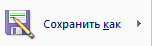
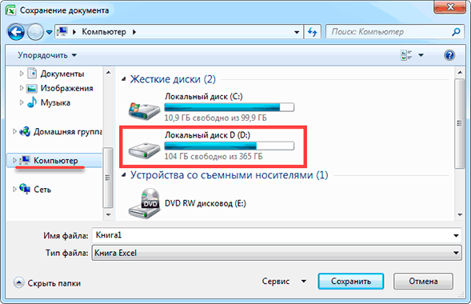
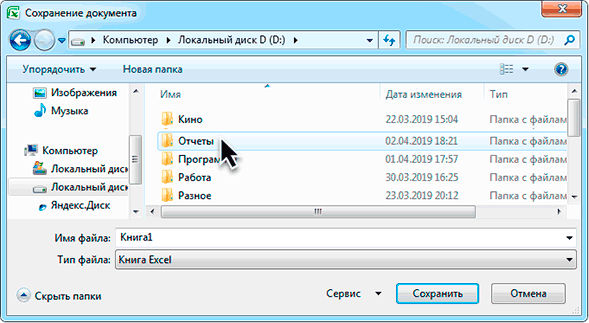
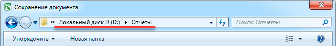
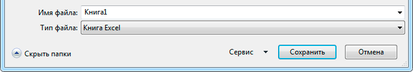
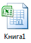

Сохранение в Экселе
Записывание таблиц Эксель в компьютер называется сохранение. Это такой процесс, при котором мы создаем новый файл и вносим его на Локальный диск. Потом его можно открыть на ПК, перенести на флешку, отправить по интернету.
Инструкция
1. Нажмите на надпись «Файл» в левом верхнем углу программы.
Если такой надписи нет, щелкните по круглой кнопке с цветными квадратами. Она тоже находится в верхнем углу Экселя.
2. Из списка выберите пункт «Сохранить как».
3. Появится небольшое окно выбора папки для сохранения. Указать ее можно через левую часть.
Покажу на примере. Допустим, я хочу записать таблицу на диск D, в папку «Отчеты». Значит, через левую часть окна выбираю «Этот компьютер» и открываю Локальный диск D.
Затем открываю «Отчеты».
Если нужной папки нет, ее можно создать прямо в окне. Для этого нажать на кнопку «Новая папка» вверху.
Проверяю, правильно ли выбрано место для сохранения. Оно будет написано в верхней строке.
На заметку. Многие пользователи записывают данные в «Документы» или на Рабочий стол. Но я не советую хранить в них важную информацию, так как эти места ненадежны. Лучше сохранять в диск D или другой подобный (кроме C). Подробнее читайте в этом уроке.
4. Напечатайте название для вашего файла или оставьте таким, как предлагает программа. Название можно поменять в нижней строке.
5. Нажмите на кнопку «Сохранить».
Окошко исчезнет – это будет означать, что данные сохранились в указанном месте.
Теперь можно закрыть программу Excel и попробовать найти записанный файл в компьютере. Для этого зайдите в то место, которое выбрали при сохранении. Там должен быть файл с указанным названием или стандартным именем «Книга 1».
Важно! При работе данные лучше время от времени сохранять. Для этого используйте вот такую кнопку в верхнем левом углу программы:
Нажав на нее, информация перезапишется. То есть записанный ранее вариант заменится новым. Это нужно, чтобы случайно не потерять данные. Ведь если в системе произойдет сбой (зависание, отключение электричества), то велика вероятность потери таблицы.